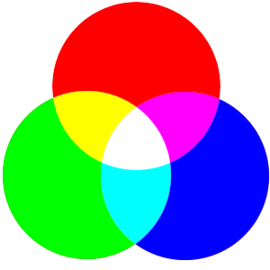
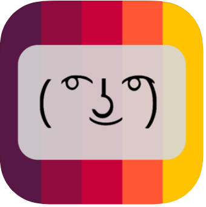

Past projects
Before forming Livical, Quentin published several apps covering multiple categories. Some apps are no longer available on the app stores.

Stroop Effect (2014)
Based on the psychological effect of the same name. Match the color to the color of the text, not the word's meaning. Compete with friends on the Stroop Effect leaderboard.

Lenny Faces (2018)
"Emoticons resurrected." iMessage keyboard extension to quickly add old-style emoticons to your texts. Often in the top 50 Comics & Cartoon apps for iMessage.
 Wordicle - Unlimited Charades (2019)
Wordicle - Unlimited Charades (2019)
Based on headbands/charades. 50 words relating to the topic you enter are automatically generated for you ensuring a truly unique set of cards each time you play.
Sidewalk - Proximity Chat (2020)
Chat with anyone in a 100-mile radius. Inspired by YikYak but with enhanced privacy and safety chatting features.